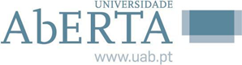

Enquadramento da Unidade Curricular
Esta página apresenta a Unidade Curricular (UC) Visualização de Informação (ano letivo 2025/2026), integrada no Mestrado em Engenharia Informática e Tecnologia Web (MEIW), um mestrado em colaboração entre a Universidade Aberta (UAb) e a Universidade de Trás-os-Montes e Alto Douro (UTAD). A UC é lecionada em regime online, com forte ênfase no trabalho por projetos e na comunicação assíncrona, suportada pela plataforma Moodle. (ROCHA; PESTANA, 2025/2026)

Objetivos
A UC tem como objetivo formar o estudante em aspetos avançados de Visualização de Informação (VI), reforçando a capacidade de transformar dados em representações visuais que suportem análise, interpretação e comunicação com rigor. A VI é apresentada como componente fundamental para dar legibilidade a sistemas interativos que lidam com grande volume de dados, permitindo revelar padrões e conhecimento anteriormente não evidente. (ROCHA; PESTANA, 2025/2026)
Em termos metodológicos, privilegia-se uma abordagem iterativa de design e validação, alinhada com frameworks de análise e desenho de visualizações, em que se articulam decisões sobre dados/tarefas, codificação visual, interação e validação. (MUNZNER, 2014)
Competências a desenvolver
- Reconhecer a importância da VI no desenho e implementação de aplicações interativas para diferentes domínios. (ROCHA; PESTANA, 2025/2026)
- Conhecer técnicas visuais e de interação e saber quando as aplicar. (ROCHA; PESTANA, 2025/2026)
- Compreender aspetos de cognição e perceção visual relevantes para comunicação visual eficaz. (ROCHA; PESTANA, 2025/2026)
- Entender o papel da estética visual no processo comunicacional e na relação com o utilizador. (ROCHA; PESTANA, 2025/2026)
- Integrar princípios, modelos e técnicas de VI no desenvolvimento de soluções finais. (ROCHA; PESTANA, 2025/2026)
- Utilizar metodologias adequadas para desenho, implementação e avaliação de soluções de VI. (ROCHA; PESTANA, 2025/2026)
Conteúdos programáticos
O percurso da UC organiza-se por tópicos que cobrem, de forma progressiva, os pilares conceptuais e práticos da VI, culminando num projeto final. (ROCHA; PESTANA, 2025/2026)
- Introdução à visualização
- Dados e tarefas
- Análise
- Codificação visual
- Design e redesenho
- Estética e perceção visual
- Metodologia para avaliação da visualização
- Ferramentas de software para desenvolver a visualização
- Projeto final
Metodologia e ambiente de aprendizagem
As atividades decorrem em regime online, valorizando a comunicação assíncrona e a participação em fóruns. A UC segue o Modelo Pedagógico da UAb para cursos de 2.º/3.º ciclo e é explicitamente orientada por projetos, recomendando um planeamento semanal de trabalho e contacto frequente com o ambiente virtual. (ROCHA; PESTANA, 2025/2026)
A avaliação e melhoria das soluções de visualização pode ser enquadrada por cenários e métodos de avaliação (por exemplo, desempenho do utilizador, experiência de uso, comunicação através da visualização), permitindo justificar escolhas e iterar com evidência. (LAM et al., 2011)
Recursos e ferramentas
A UC recorre a artigos científicos e a ferramentas de software para apoiar a aprendizagem e a implementação de soluções, incluindo RAW, Tableau/Power BI, D3.js e Python (com apoio de análise assistida). (ROCHA; PESTANA, 2025/2026)
No contexto web, o uso do D3.js é particularmente relevante para a transição do estático para o interativo, pela ligação direta entre dados e elementos do DOM/SVG, facilitando desenvolvimento incremental, depuração e interações ricas. (BOSTOCK; OGIEVETSKY; HEER, 2011)
Relação com este projeto
O projeto final desta UC materializa a aplicação prática dos princípios discutidos ao longo do semestre, incluindo a passagem de protótipos e análises para uma solução interativa, com uma narrativa clara, explícita e não manipuladora. Esta dimensão de narrativa em visualização — equilibrando orientação do autor e exploração do leitor — é um tema central em visualização narrativa. (SEGEL; HEER, 2010)
Repositório do projeto (progressão completa do trabalho):
github.com/AndreMacielSousa/Visualiza-o-de-Informa-o-2025-26
Referências (ABNT)
BOSTOCK, Michael; OGIEVETSKY, Vadim; HEER, Jeffrey. D3: Data-Driven Documents. IEEE Transactions on Visualization and Computer Graphics, v. 17, n. 12, p. 2301–2309, 2011.
LAM, Heidi; BERTINI, Enrico; ISENBERG, Petra; PLAISANT, Catherine; CARPENDALE, Sheelagh. Seven Guiding Scenarios for Information Visualization Evaluation. Technical Report n. 2011-992-04. University of Calgary, 2011.
MUNZNER, Tamara. Visualization Analysis and Design. Boca Raton: CRC Press, 2014.
ROCHA, Tânia; PESTANA, Pedro Duarte. Contrato de Aprendizagem — Visualização de Informação 2025–26. PlataformAbERTA (Moodle Universidade Aberta), 2025/2026.
SEGEL, Edward; HEER, Jeffrey. Narrative Visualization: Telling Stories with Data. IEEE Transactions on Visualization and Computer Graphics, v. 16, n. 6, p. 1139–1148, 2010.